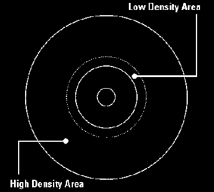
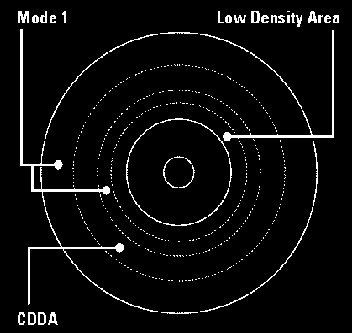

GD-Workshop and
GD-Mastering
Dylan Bromley
Sega of America
(Retyped into one big document by ProtoCat)
Using GD-Workshop: A Walkthrough
Emulation Drive:
Physical GD-ROM:
- 120 Minutes
- 1 Gig of data
Definition of Data Areas:
- Low Density Area: 4 minutes long and holds ~35MB of data
- High Density Area: 112 minutes long and holds ~1GB of data

Track Types:
- CDDA: Contains raw audio files.Each audio file must be on its own track
- Mode1: These tracks contain game data information and the game executable
Definition of Sessions:
- Session 1: Low Density Area of GD
- Both tracks must contain 4 sec of data:
- Track 1 - Mode1: GD buffer
- Track 2- CDDA: Stores audio file to be played when inserted into
a CD player
- Session 2: High Density Area of GD
- Need for two Mode1 tracks:
- Track 3: Mode1 buffer area
- Needs 4 secs of data
- Track Tab: Pad Track Check Box
- Track 4: Mode1 Game Data
- Outer most track on physical GD
- Contains 1ST_READ.BIN File
- Files can be reordered for file read speed optimizations
via the listview option
Adding of Digital Audio Tracks:
- Insertion of CDDA tracks
- Reorder of last Mode1 track

GD-Mastering
Compilation of a Bootable File:
- All example files contain a BIN option
- In the EXE directory the BIN file is created
- BIN file must be placed on the last Mode1 track
IP.BIN: The First File Loaded:
- IP.BIN and IP0000.BIN are required to be present in the project
- IP0000.BIN = IP.BIN x8
- Creation of IP.BIN and IP0000.BIN is included in the release in the Shinobi
samples directory
- This file contains several different fields which need to be customized
for each title:
- Hardware ID
- Maker ID
- Device Information
- Area Symbols
- Peripherals
- Product Number
|
- Version
- Release Date
- 1st Read File Name
- Software Maker Info
- 90 - d0: Title String info
- Game Title
|
Placement of IP.BIN files within the project:
- Disc tab within GD-Workshop
- System Area File (single): IP0000.BIN
- System Area File (high): IP.BIN
Testing Your Bootable Project:
- Close the drawer
- Reset the Dev Station
Burning the Image:
- Add the GD-Writer
- Configuration\SCSI Bus
- Select the GD-Writer and Add as GD-Writer
- Testing Burning
- Emulator\Test Write
- Goes through the process of burning without turning on the laser
- Final Burning
- Emulator\Write
- ~1 hour to burn
- Testing the Burn
- Switch GD Emulator to GD-ROM mode
- This mode allows booting from the GD drive
- Insert GD and reset Dev Station